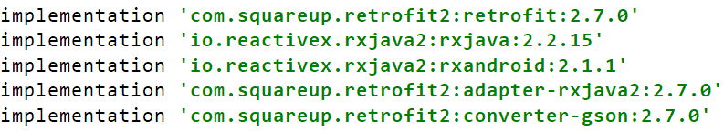

一、前言
说起Retrofit与RxJava的封装就不得不说起MVP，由于自己老是记不住搭建MVP的结构加上感觉每次写项目都要重复一遍，所以记录一遍搭建的过程。
二、添加依赖
截至2019年12月22日，Retrofit2的最新版本为 2.7.0，RxJava2的最新版本为2.2.15，RxAndroid的版本为2.1.1，我们总共添加的依赖如下：

有很多博客说还要添加OkHttp3的依赖，由于Retrofit2本就是根据OkHttp3来搭建的，所以我们可以看到依赖里其实有OkHttp3的依赖的，不必再进行二次添加了。

三、构造Retrofit2基础
这里我们使用 玩Android 开放API 的首页文章进行举例。由于网站返回的json具有统一的格式，所以我们需要写一个基础的数据实体类：BaseData
public class BaseData<T> {
private T data;
private int errorCode;
private String errorMsg;
//get和set方法
}我们通过示例可以看出首页的一级bean为下图所示，所以我们再定义一个PageBean

public class PageBean {
private int curPage;
private List<ArticleBean> datas;
private int offset;
private boolean over;
private int pageCount;
private int size;
private int total;
//get和set方法
}接着我们定义文章的bean
public class ArticleBean {
private String apkLink;
private int audit;
private String author;
private int chapterId;
private String chapterName;
private boolean collect;
private int courseId;
private String desc;
private String envelopePic;
private boolean fresh;
private int id;
private String link;
private String niceDate;
private String niceShareDate;
private String origin;
private String prefix;
private String projectLink;
private long publishTime;
private int selfVisible;
private long shareDate;
private String shareUser;
private int superChapterId;
private String superChapterName;
private List<?> tags;
private String title;
private int type;
private int userId;
private int visible;
private int zan;
//get和set方法
}最后我们写一个Retrofit2的接口
public interface Api {
/**
* 获取主页文章
* @return Observable<BaseData<PageBean>>
*/
Observable<BaseData<PageBean>> getHomeArticleList();
}再编写一个Retrofit的工具类用于获取Retrofit的示例
public class RetrofitUtil {
private static Api instance;
public static Api getApi(){
if (instance == null) {
String baseUrl = "https://www.wanandroid.com/";
instance = new Retrofit.Builder().baseUrl(baseUrl)
.addCallAdapterFactory(RxJava2CallAdapterFactory.create())
.addConverterFactory(GsonConverterFactory.create()).build().create(Api.class);
}
return instance;
}
}到此为止，我们就将Retrofit的基础部分编写完成，接着完成RxJava部分。
四、编写RxJava的基础
首先编写订阅者BaseObserver这里选择继承ResourceObserver类